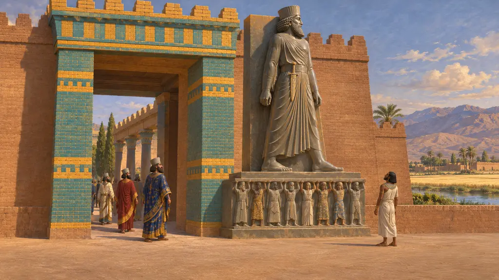
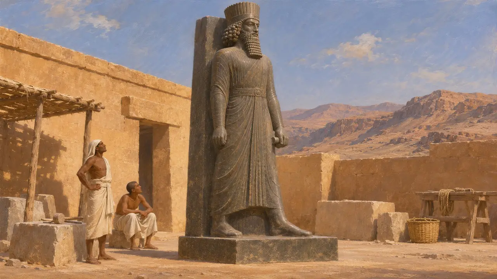
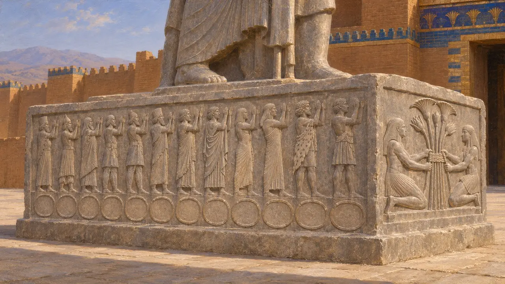
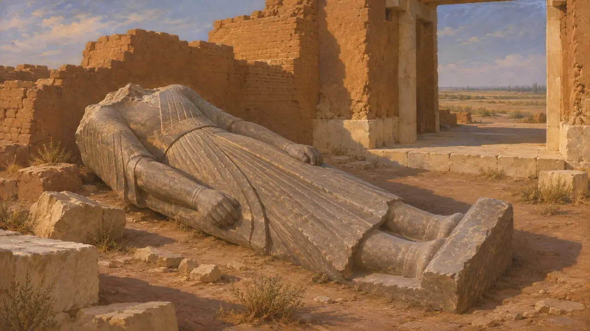
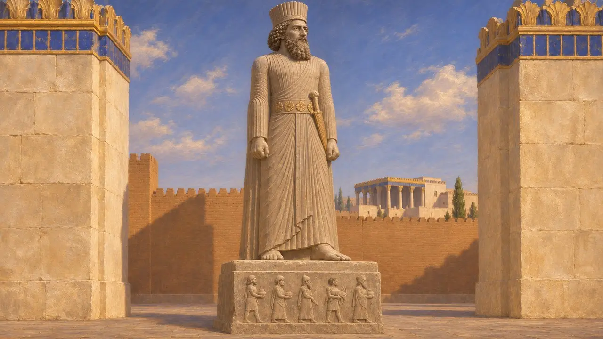
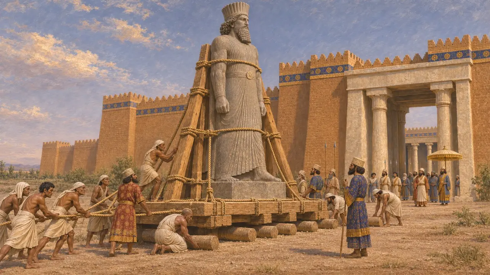

Statue of Darius
Egyptian-made statue of Darius I from the gate at Susa, late 6th or early 5th century BCE
في اللعبة: المستوى 5: الميثاق
A greywacke statue of Darius, carved in Egypt in the Egyptian manner but dressed in the Persian court robe, was found at Susa in 1972. It is headless and stands about 2.5 metres high on its base. Its texts, in Egyptian hieroglyphs and in Old Persian, Elamite and Babylonian, say why it was made, and its base shows the peoples of the empire holding up the King.
في اللعبة: The game offers the Statue of Darius as a decoration at Susa only, drawn whole with the head it has lost. It is the one statue among the game's Persian decorations, because it is a real one.

Made in Egypt
في السجلاتThe cuneiform text on the robe says, in substance, that Darius ordered this stone statue made in Egypt so that whoever saw it in time to come would know that the Persian man holds Egypt. The stone is greywacke from the Wadi Hammamat in Egypt's eastern desert, and the pose, striding with the left foot forward against a back pillar, is Egyptian.
Susa statue of Darius (DSab); J. Yoyotte, Cahiers de la DAFI 4, 1974

The twenty-four peoples
في السجلاتOn each long side of the base twelve figures, each in his own people's dress, raise their hands under the King. Below each is an oval ring of the kind Egyptians drew for the names of foreign lands, holding that people's name in hieroglyphs, from Persia, Media and Elam to Egypt, Libya and Kush. On the ends two Nile gods tie together the plants of Upper and Lower Egypt, the old sign of the Two Lands united.
M. Roaf, The subject peoples on the base of the statue of Darius, Cahiers de la DAFI 4, 1974

Found at the gate
في السجلاتFrench excavators at Susa found the statue in 1972 lying beside the passage of the great gatehouse east of Darius's palace, broken and without its head. Xerxes' inscriptions found at the gate name it as his father Darius's work. The statue is now in the National Museum of Iran in Tehran.
J. Perrot (ed.), The Palace of Darius at Susa, 2013

A pharaoh in a Persian robe
في السجلاتIn the hieroglyphic texts Darius bears the titles of a pharaoh and is called the beloved of Egyptian gods, while his robe, belt and dagger are Persian. The statue shows how Darius presented himself in Egypt: as a lawful king in the country's own forms, ruling it as a Persian.
A. Kuhrt, The Persian Empire, 2007

How it came to Susa
متنازع عليهThe hieroglyphs name Atum, the god of Heliopolis, so many scholars think the statue first stood in a temple there and was brought to Susa later, perhaps under Xerxes. Others think it was made for Susa from the start. No text says when or why it made the journey.
J. Yoyotte, Cahiers de la DAFI 4, 1974; A. Kuhrt, The Persian Empire, 2007
المصادر
- Susa statue of Darius (DSab)
- J. Yoyotte, Cahiers de la DAFI 4, 1974
- M. Roaf, The subject peoples on the base of the statue of Darius, Cahiers de la DAFI 4, 1974
- J. Perrot (ed.), The Palace of Darius at Susa, 2013
- A. Kuhrt, The Persian Empire, 2007